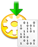
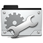
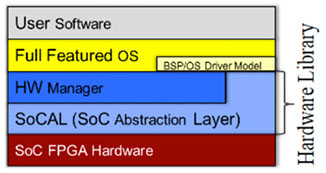

Learn more about designing for Altera SoCs.
This section covers high-level concepts and includes links to more in-depth training, tutorials, and design resources. For even more detail please visit the Atlas-SoC page on RocketBoards.org.
Software
Hardware
Learn About Software Development For Altera SoCs
Developing software for Altera SoC devices is similar to developing for other ARM Cortex-A MPCore based processors in terms of the tool chain used, development flow, and software ecosystem available. The FPGA portion of the device can be considered much like a Flash device, in that it needs to be loaded (i.e. configured). Once configured, custom hardware in the FPGA can be treated as memory-mapped peripherals when accessed under program control.
Software Development Overview
Altera SoCs are unique in that the FPGA portion of the device can be customized by adding hardware functions. Imagine for example a device with multiple copies of a peripheral (e.g. 20 UARTs), several hardware accelerators (e.g. FIR, FFT, image processing), or some combination of both.
For the embedded software developer this means the following:
- Software can configure (and re-configure) the FPGA hardware at run time.
- Custom hardware in the FPGA can be accessed as memory-mapped peripherals by the processor.
- Software support for the custom hardware must be provided in the board support package.
The sections below cover some of the key topics for SoC software development:
CPU Boot
HW/SW Handoff
Accessing the FPGA
Building Linux
CPU Boot Flow
A typical boot flow includes the following stages:
- BootROM
- Preloader
- U-Boot
- Linux (or other OS)
The boot process always begins with the BootROM and proceeds to the Preloader and (typically) a boot loader, OS, and application software.
BootROM
On power up, the processor executes the BootROM code which resides in on-chip ROM. The primary role of the BootROM is to initialize the hardware components needed to load the next stage boot software, the Preloader. The BootROM fetches the Preloader binaries from serial NOR flash, NAND flash or SD/MMC flash memory based on the boot select (BSEL) pins. The BootROM uses the clock select (CSEL) pins to determine the clocks to be used.
Instead of running the Preloader from Flash, the BootROM can optionally:
- Run Preloader code stored in FPGA memory
- Run code from RAM - this option can be used only on Warm reset
Preloader
The main functions of the Preloader are:
- Initialize the SDRAM interface including SDRAM’s PLL configuration and interface calibration.
- Copy the Bootloader image from NAND, SD/MMC or serial NOR flash to SDRAM.
- Pass control to the Bootloader.
In addition to the above, the Preloader also:
- Configures the processor's I/Os through the Scan Manager.
- Configures the HPS pin muxing through System Manager (configurable by Qsys).
- Re-configures the PLLs based on user specified settings (configurable by Preloader Generator).
- Releases all, or specific, peripherals from reset through Reset Manager (configurable by Qsys).
- Initializes the required flash controller (either NAND, SD/MMC or QSPI) based on boot options.
Bootloader
The Bootloader used in this example is U-Boot. U-Boot is an open source, primary boot loader used in embedded devices. U-Boot is licensed under GPL as it is an open source framework. For more details about U-Boot, please refer to http://www.denx.de/wiki/U-Boot/Documentation.
The main functions of U-Boot are:
- Set up the OS environment.
- Fetch the OS image from NAND, SD/MMC, serial NOR flash, Ethernet through TFTP, USB mass storage.
- Copy the boot image to SDRAM and pass control to subsequent boot image.
- Provide a console for user operations such as modifying the Device Tree Blob (DTB) and boot arguments.
For more details visit: Rocketboards.org > GSRD Boot Flow
Hardware-to-Software Handoff
Files generated by the hardware design tools (i.e. Quartus & Qsys) are "input" files from which the the Preloader, DS-5 debug information (i.e. details about FPGA peripherals), and the device tree are generated.
Preloader Generation
The Preloader Generator tool creates a custom Preloader based on the settings made by the hardware engineer (e.g. HPS peripherals used, SDRAM settings, etc.).

For more details see: SoC EDS User Guide > Section 7
System View Description (.svd) File Generation
A convenient feature of the ARM DS-5 debugger is the ability to access registers of soft IP cores within the FPGA fabric using Cortex Microcontroller Software Interface Standard (CMSIS) System View Description (.svd) files. With this feature, you can easily read and modify the soft IP registers directly from the DS-5 debugger the same way you can with processor registers.
Device Tree Generation
A Device Tree is a data structure that describes the underlying hardware to an operating system - primarily Linux. By passing this data structure to the OS kernel, a single OS binary may be able to support many variations of hardware. This flexibility is particularly important when the hardware includes an FPGA. The generated Device Tree describes the HPS peripherals, selected FPGA Soft IP, and peripherals that are board dependent.
For more details visit: Rocketboards.org > Device Tree Generator
HPS / FPGA Interface Bridges
The CPU and FPGA can communicate across three unique, memory-mapped interface bridges.
- HPS-to-FPGA Bridge: This bridge provides a wide, high bandwidth interface for the CPU to send data to the FPGA (i.e. CPU is the master).
- FPGA-to-HPS Bridge: This bridge provides a wide, high bandwidth interface for the FPGA to send data to the CPU (i.e. FPGA is the master).
- Lightweight HPS-to-FPGA bridge: This bridge provides an alternate path for the CPU to initiate transactions with the FPGA. It is intended to carry traffic that is more random in nature (i.e. not a continuous stream of data). This is the typical port used to communicate with the control and status registers of "soft" IP cores (peripherals) in the FPGA.

Accessing FPGA Peripherals
The register interface of memory-mapped peripherals implemented in the FPGA logic can be accessed in several ways:
Application Software Development
- Bare-metal software using Hardware Libraries (HWLibs)
- OS drivers
Test & Debug (R/W registers via JTAG)
- Software debugger - During the HW/SW handoff, a .svd file is generated that tells ARM DS-5 (Altera Edition) about the peripherals in the FPGA and allows the debugger to access them just like it does for CPU registers.
- System Console - This tool is provided for the hardware developer so that they can access IP cores in the FPGA during hardware debug. It
Configuring the FPGA
The FPGA can be configured (or re-configured) in several ways:
- From a dedicated external configuration flash memory (serial or parallel)
- With the Quartus Programmer tool (JTAG)
- From software (e.g. Preloader, UBoot, Linux, etc.)

For more details visit: Rocketboards.org > Programming FPGA from HPS
Other Interfaces
Interrupts
You can configure the HPS component to provide 64 general-purpose FPGA-to-HPS interrupts, allowing soft IP in the FPGA fabric to trigger interrupts to the MPU’s generic interrupt controller (GIC).
GPIO Peripheral
Signals from logic in the FPGA can be connected to the general purpose IO (GPIO) peripheral of the HPS. This is an input-only interface with 14-bit wide width.
General Purpose Input Register
Up to 32 signals from the FPGA can be connected to a general purpose input register and read under software control.
General Purpose Output Register
The general purpose output register can be used to send data to the FPGA under software control.

Tools & Debug
The specific tools used to develop and debug embedded software for Altera SoC devices vary depending on whether you are developing software to run on the Linux OS, or bare-metal / RTOS.
Linux
Bare-Metal or Other OS/RTOS
Compiler
- Linaro Linux Compiler
- ARM Compiler 5
Debugger
- ARM-DS5 Community Edition
- ARM DS-5 Altera Edition
- GNU GDB
Integrated Development Environment (IDE)
- Eclipse
Utilities
- HPS Flash Programmer
- SD CArd Boot Utility
- Device Tree Generator
- Yocto Eclipse Plugin

Compiler
- Bare-Metal Compiler - Mentor Graphics Sourcery Codebench Lite Edition
- ARM Compiler 5
Debugger/Trace
- ARM-DS5 Community Edition
- ARM DS-5 Altera Edition
- GDB
Integrated Development Environment (IDE)
- Eclipse
Performance Analysis
- ARM Streamline (included with ARM DS-5 AE)
Hardware Libraries (HWLibs)
- Hardware Manager (HW Manager)
- SoC Abstraction Layer (SoCAL)
Utilities
- HPS Flash Programmer
- SD CArd Boot Utility
Software Ecosystem
You can develop immediately for Linux with the tools included on the Atlas-SoC SD Card via SSH or VNC connection to the board. Click the "Develop" tab above to begin.
To develop code on your PC or workstation download the tool chain from one of the sites below:
Linux
- Download U-boot, Linux, and Yocto from the Git Trees
Useful resources:
- Getting Started With Git Trees
- Using Yocto Source Package
- Yocto Project User Manual
- SoC Embedded Design Suite User Guide
You can develop immediately for bare-metal applications with the tools included on the Atlas-SoC SD Card via SSH or VNC connection to the board. Click the "Develop" tab above to begin.
To develop code on your PC or workstation download the tool chain from one of the sites below:
Bare-metal tools
- Download the SoC Embedded Design Suite
Useful resources:
SoC Embedded Design Suite User Guide
Tutorials, On-Line & Instructor-Led Training
This section will describe the kinds of training available:
- "How-to" web videos
- On-line training
- instructor-led training
- Links to Altera training web site and select partner web sites
On-Line Training
Altera offers several, free on-line training courses in both English, Chinese, and Japanese. Be sure to visit the Read Me First! section to get started.
- SoC Hardware Overview: the Microprocessor Unit - 34 minutes
- Software Design Flow for an ARM-based SoC - 36 minutes
- System Management, General Purpose, and Debug Peripherals - 26 minutes
"How-To" Web Videos
On-Line Workshops
Learn About Hardware Development For Altera SoCs
Developing hardware for Altera SoC devices is similar to developing for any other FPGA in terms of the design tools, development flow, and IP cores. IP inside the FPGA can be accessed by the ARM CPU, and can access hard peripherals and interfaces inside the CPU such as the Ethernet MAC, UART, and memory controller.
Design Flow
The following steps are common in any FPGA development flow.
Design entry
Simulation
Synthesis
Place & Route
Timing Analysis
Gate-Level Simulation (optional)
PC Board Simulation & Test
Outline:
This section will outline the hardware design flow including:
- Quartus/Qsys
- Simulation
- Synthesis
- Compilation
- Configuration
- Debug
Tools & Debug
This section will cover:
- Quartus II
- ModelSim
- Qsys
- DSP Builder
- SignalTap
- System Console
IP Cores
This section will list the kits of cores available by category with links to Altera IP pages:
- Processor
- Peripherals
- Memory
- Communication
- Image processing
Tutorials, On-Line & Instructor-Led Training
This section will describe the kinds of training available:
- "How-to" web videos
- On-line training
- instructor-led training
- Link to Altera training web site and select partner web sites
- Link to design services network partners